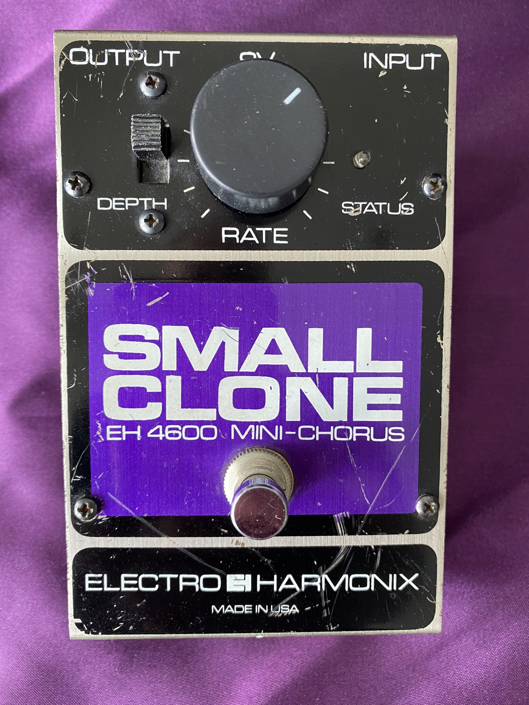
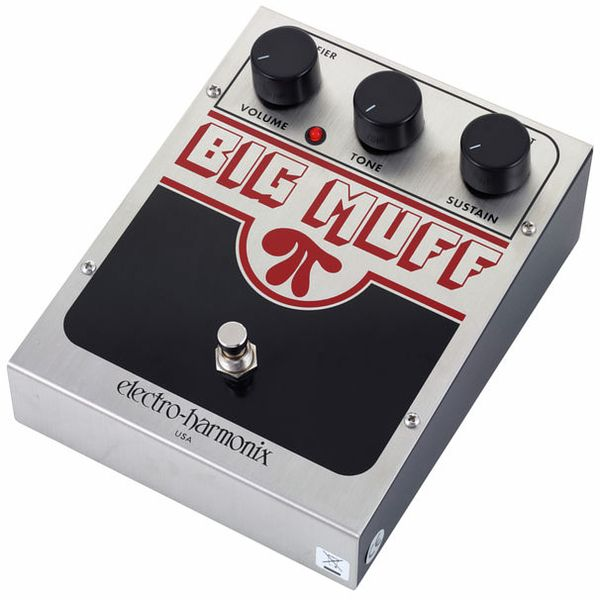
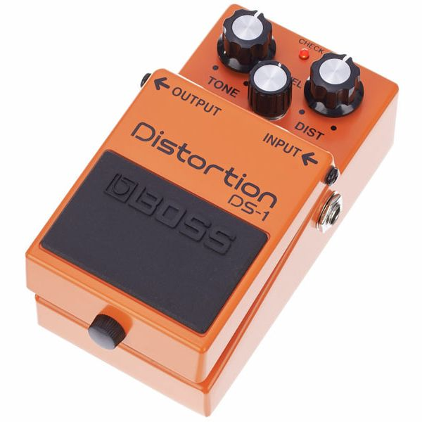

The Electro-Harmonix Small Clone is a chorus effect pedal that was popularized in the 1980s and used by many guitarists of that era, including Kurt Cobain of Nirvana. The pedal produces a lush, shimmering chorus effect by splitting the guitar's signal, modulating one side of the signal, and then recombining the two signals.

Cobain used the Small Clone on several Nirvana recordings and live performances. It can be heard on songs like "Come as You Are," "In Bloom," and "Lithium," where it adds a subtle, but distinctive chorus effect to the guitar's sound. The pedal was also used on Cobain's acoustic guitar in the MTV Unplugged performance of "The Man Who Sold the World."
The Small Clone was a popular effect among guitarists of the 1980s and remains a classic pedal in the Electro-Harmonix lineup. Its rich, warm sound has made it a favorite of many players and helped it become a staple of many genres of music.
The Electro-Harmonix Big Muff is a distortion/fuzz pedal that has been used by countless guitarists since its introduction in the late 1960s. The pedal produces a thick, heavy distortion that is often described as "fuzzy" or "saturated." The Big Muff has become synonymous with the sound of classic rock and has been used by many iconic guitarists, including David Gilmour of Pink Floyd and Jimi Hendrix.

Kurt Cobain of Nirvana was also a fan of the Big Muff and used it extensively in his playing. The pedal can be heard on many Nirvana recordings and live performances, where it added a thick, heavy distortion to Cobain's guitar sound. It was used on songs like "Lithium," "Come as You Are," and "Breed," among others.
Cobain's use of the Big Muff helped popularize the pedal among a new generation of guitarists in the 1990s and cemented its status as a classic effect. The Big Muff remains a popular pedal today and has been reissued several times by Electro-Harmonix to meet the demand of guitarists seeking its unique and iconic sound.
The Boss DS-1 and DS-2 are both distortion pedals that have become staples in the world of guitar effects. The DS-1 was introduced in 1978 and quickly became one of Boss's most popular pedals, while the DS-2 followed in 1987 and added a second gain stage for increased versatility.
The DS-1 produces a classic, mid-range focused distortion that is often described as "gritty" or "crunchy." The pedal has been used by many guitarists over the years, including Kurt Cobain of Nirvana, who used it on several recordings and live performances. The DS-1 can be heard on songs like "Lithium" and "Breed," where it adds a thick, heavy distortion to Cobain's guitar sound.

The DS-2, on the other hand, offers two distinct modes of distortion: "Turbo" and "Normal." The "Turbo" mode provides a higher-gain distortion that is well-suited for heavy metal and hard rock, while the "Normal" mode offers a more classic distortion sound that is similar to the DS-1. The DS-2 has been used by many guitarists over the years, including Steve Vai, who used it on his album "Passion and Warfare."
Both the DS-1 and DS-2 have remained popular distortion pedals for decades and have been used by countless guitarists in a variety of musical styles. The pedals are known for their reliability, versatility, and distinctive tone, and continue to be popular choices for guitarists seeking classic distortion sounds.